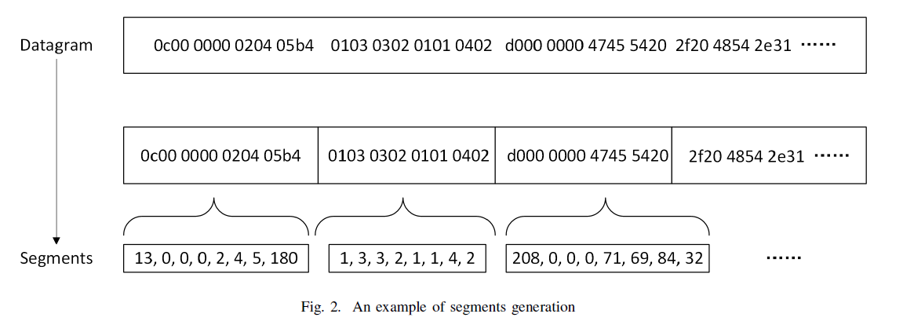
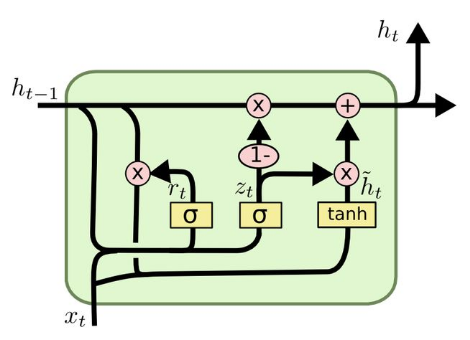
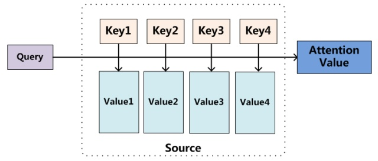

BSNN
一篇关于网络协议分类论文的复现工作
论文理解
本质其实是一个文本分类问题，解决的问题是对网络协议分类，但不同于以往的协议分类问题，这篇论文不使用报文头等特征信息，而是纯粹地从payload特征提取角度对网络协议分类。因此可以看作一个文本分类问题，输入一个packet的payload部分，输出报文协议类型。其优点在于：
- 可以学习新的协议，而不被限制于已有协议
- 不需要繁复的对报文头特征信息的挖掘（并且这些信息可能是不靠谱的，可以修改的话）
模型结构如上所示，是一个Hierarchical attention network。
先解释一下模型中的各个字段的意思。Datagram指的是一个packet中的payload部分，如下图wireshark抓包后蓝色的byte部分。进一步对Datagram做划分可以得到很多个长度均等的Segment，这里如果设定每个segment长度都为5的话，一个segment就可以表达为下图中红色方框部分。可以看到一个segment[3b, de, 01, 00, 00]里有多个十六进制字符。
这里为了更好的理解，可以做一个类比：
- 一篇文章 ==> datagram ==> [3b, de, 01, 00, 00, 01, 00, 00……]
- 文章中的句子 ==> segment ==> [3b, de, 01, 00, 00]
- 句子中的单词 ==> 3b
现在要对这样一个结构的datagram做训练，最后需要学到它所属的协议类型。模型的直觉就是我们首先去关注一个句子（segment）中单词（character）的表达，使用rnn(LSTM/GRU)训练并且每个单词对于这个句子的重要性是不同的（attention机制），通过这样一个过程得到这个句子（segment）的表达。之后再重复类似的过程，在一篇文章（datagram）中，不同句子的重要性不同，关注于“焦点”，通过一个attention encoder得到这篇文章（datagram）的表达，使用softmax等最后得到这个文章（datagram）的类别。
整个模型有两层attention encoder，使用的RNN Unit是LSTM/GRU（我后面实现的GRU，因为对我的电脑友好一些🐶），且是bidirectional的（双向），因为这里上下文都是有意义的，需要全局的。实现细节上使用Focal Loss，主要是为了处理样本数据不均衡的问题（好巧不巧我做数据的时候正好每个类别都是均分的，似乎对我这个没有多大用处，我的错），评估指标使用$F_1$。
代码复现
代码目录中data文件夹内为数据，try文件夹中为第一次尝试的pytorch代码（nn结构有问题，当时不太搞明白多层attention怎么写，但也是个实践过程先保存下来），run_BSNN保存的运行数据，pre.py做数据预处理，DataUtil.py做数据padding及划分，BSNN.py放模型，train.py为运行入口。
tensorflow版本为1.14（主要想使用一个老版本的库，降到这个版本，warning还是有的😅），pre使用的pytorch（但是相关数据预处理已运行出来保存好了，因此不需要再使用pytorch运行pre.py）
数据预处理
论文中数据集是自己收集了，并且在网上找了一下现存数据集，比较难得到条件适合的，因此自己流量抓包收集了300笔数据（多了我电脑伤不起欸😭）。数据特征如下：
- 抓的是DNS，OICQ，QUIC三个协议，每个抓取了100笔，其中后两个是google使用的快传协议和QQ使用的协议
- 一些报文内容较短，一些很长，这个特点使得做数据padding时较难选择一个合适的统一长度（我这里最后选择的100作为固定长）
- 因为是连续地抓取，前后报文相似度很多，因此每类协议多样性不足
预处理流程如下图所示：
pre.py中数据处理代码
1 | # -*- coding: utf-8 -*- |
DataUtil.py中进一步处理
1 | import numpy as np |
模型构建
模型主要分为四个部分：
- word encoder （BiGRU layer）
- word attention （Attention layer）
- sentence encoder （BiGRU layer）
- sentence attention （Attention layer）
GRU原理
GRU是RNN的一个变种，使用门机制来记录当前序列的状态。在GRU中有两种类型的门（gate）: reset gate和update gate。这两个门一起控制来决定当前状态有多少信息要更新。
reset gate是用于决定多少过去的信息被用于生成候选状态，如果Rt为0，表明忘记之前的所有状态：
$$
r_t = \sigma(W_rx_r+U_rh_{y-1}+b_r)
$$
根据reset gate的分数可以计算出候选状态：
$$
\hat{h_t} = tanh(W_hx_t+r_t\oplus(U_hh_{t-1}+b_h))
$$
update gate是用来决定由多少过去的信息被保留，以及多少新信息被加进来：
$$
z_t = \sigma(W_zx_r+U_zh_{t-1}+b_z)
$$
最后，隐藏层状态的计算公式，有update gate、候选状态和之前的状态共同决定：
$$
h_t = (1-z_t)\oplus h_{t-1}+z_t \oplus \hat{h_t}
$$
Attention原理
1、word encoder layer
首先，将每个segment中的character做embedding转换成向量（这里使用one-hot），然后输入到双向GRU网络中，结合上下文的信息，获得该character对应的隐藏状态输出$h_{it}=[\overrightarrow{h_{it}}, \overleftarrow{h_{it}}]$
$$
x_{it} = W_cw_{it}, t \in [i,T]
$$
$$
\overrightarrow{h_{it}} = \overrightarrow{GRU}(x_{it})
$$
$$
\overleftarrow{h_{it}} = \overleftarrow{GRU}(x_{it})
$$
2、word attention layer
attention机制的目的就是要把一个segment中，对segment表达最重要的character找出来，赋予一个更大的比重。
首先将word encoder那一步的输出得到的$h_{it}$输入到一个单层的感知机中得到结果$u_{it}$作为其隐含表示
$$
u_{it} = tanh(W_wh_{it}+b_w)
$$
接着为了衡量character的重要性，定义了一个随机初始化的character层面上下文向量$u_w$，计算其与segment中每个charater的相似度，然后经过一个softmax操作获得了一个归一化的attention权重矩阵$\alpha_{it}$，代表segement i中第t个charater的权重：
$$
\alpha_{it} = \frac {exp(u_{it}^Tu_w)}{\sum_t(exp(u_{it}^Tu_w))}
$$
于是，segment的向量$s_i$就可以看做是segment中character的向量的加权求和。这里的character层面上下文向量是$u_w$随机初始化并且可以在训练的过程中学习得到的。
$$
s_i = \sum_{t} \alpha_{it}h_{it}
$$
3、sentence encoder
通过上述步骤我们得到了每个segment的向量表示，然后可以用相似的方法得到datagram向量$h_{i}=[\overrightarrow{h_{i}}, \overleftarrow{h_{i}}]$：
$$
\overleftarrow{h_{i}} = \overleftarrow{GRU}(s_{i}), i \in [i,L]
$$
$$
\overrightarrow{h_{i}} = \overrightarrow{GRU}(s_{i}), i \in [1,L]
$$
4、sentence attention
和character级别的attention类似，使用一个segment级别的上下文向量$u_s$,来衡量一个segment在datagram的重要性。
$$
u_{i} = tanh(W_sh_{i}+b_s)
$$
$$
\alpha_i = \frac {exp(u_i^Tu_s)}{\sum_t(exp(u_t^Tu_s))}
$$
$$
d = \sum_{t} \alpha_{i}h_{i}
$$
5、softmax
上面的$d$向量就是我们的到的最后的datagram表示，然后输入一个全连接的softmax层进行分类就ok了。
BSNN.py中包含了最重要的模型代码:
1 | import tensorflow as tf |
训练参数
训练参数的设定可以看下面代码中configuration的内容，这里说一下论文中提到的几个参数，$\gamma = 0$，$\alpha$均等，segment长度设定为8，batch_size为30（与原文一致），epoch=10。
train.py
1 | import tensorflow as tf |
结果
| epoch | 结果 |
|---|---|
| 1 | loss 1.17914, acc 0.206897 |
| 2 | loss 1.16526, acc 0.206897 |
| 3 | loss 1.17013, acc 0.206897 |
| 4 | loss 1.16233, acc 0.206897 |
| 5 | loss 1.14642, acc 0.448276 |
| 6 | loss 1.04893, acc 0.448276 |
| 7 | loss 0.898174, acc 0.448276 |
| 8 | loss 0.708184, acc 0.827586 |
| 9 | loss 0.616511, acc 0.827586 |
| 10 | loss 0.4711, acc 0.827586 |
部分输出细节见下：
1 | current epoch 1 |
不足
- 数据集收集时间比较仓促，因此样本不够满意，数据量由于电脑性能限制也比较少
- Focal Loss针对我的数据特点使用$\alpha=[[1],[1],[1]],\gamma=0$等同于
softmax_cross_entropy_with_logits，效果不错，但没有做详尽的对比实验较难看出它的优势（后一篇文章我已经做了修改） - embedding的维度设置的256，但感觉数据表示比较稀疏
- 对于character的这一层的训练，我的直觉上来说是远不如单词训练之于句子的意义性，因为相同的byte可能不具有很强的关联性，如果直接将segment的数字表示作为输入，减少一层不知道效果是否会退化很多
参考链接
https://ieeexplore.ieee.org/abstract/document/8624128
https://www.aclweb.org/anthology/N16-1174.pdf
https://zihuaweng.github.io/2018/04/01/loss/